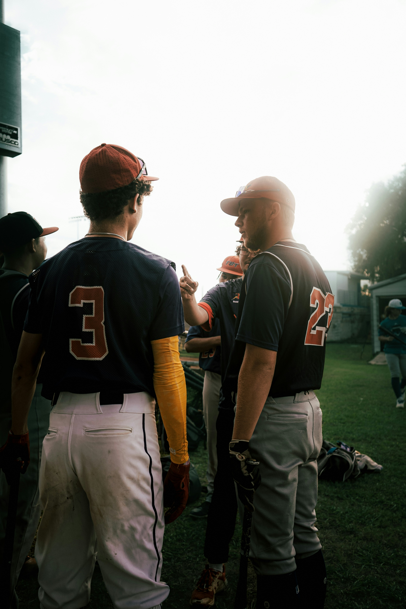

Imagen editorial representativaArranca el mercado de invierno: los movimientos que marcarán MLB en 2027
La temporada baja abre una etapa de negociaciones, decisiones contractuales y posibles incorporaciones que comenzarán a definir las plantillas del próximo año.
Leer noticia original ↗